photographs
a disposable camera out of the vending machine. twelve shots a roll, and i do not see any of them until the roll comes back from City Mags.
a roll of twelve, 6 November to 8 November
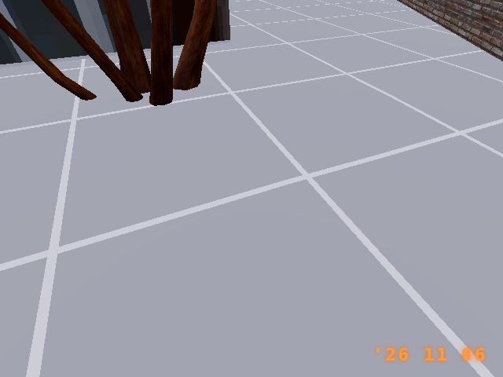
Got the weird mushrooms, want a shot for later
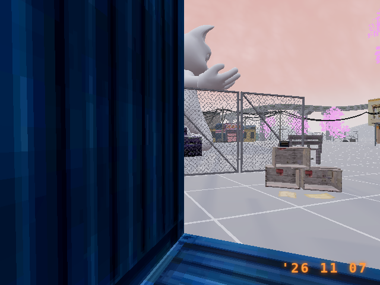
Need a reference of the shrine items to inspire the rusted‑fox‑neon‑tail wall tag.
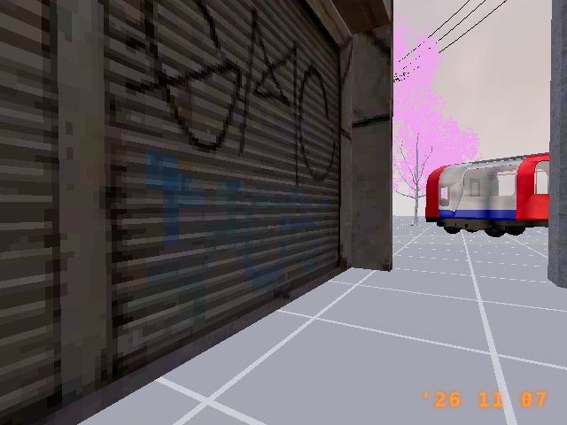
the glove looks like a tiny wave, I want to lock it in a frame
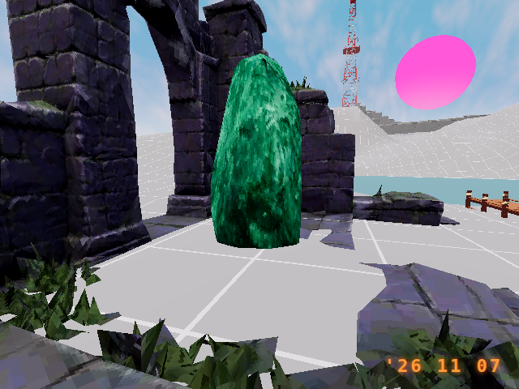
capture the stone while it glows
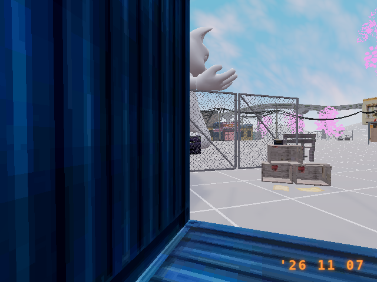
Just want a shot of the shrine's quiet corner
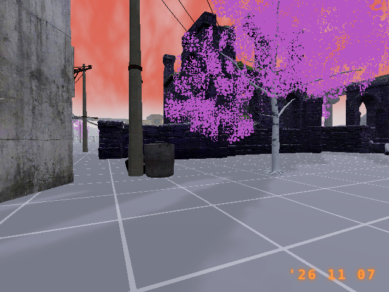
snap the neon line on the wall, see if it still shocks
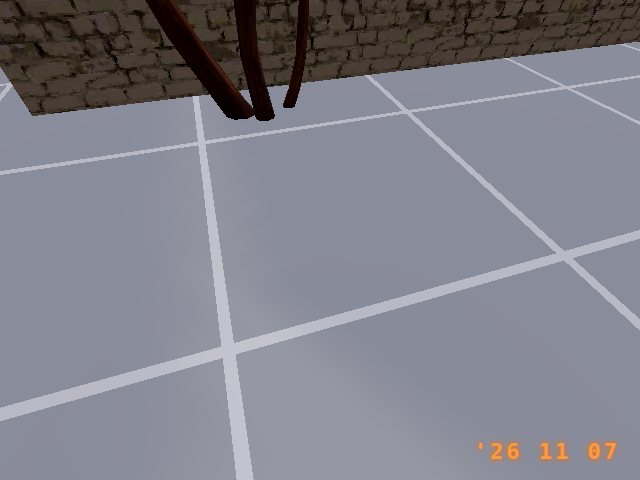
I want a snapshot of the pale mushrooms before the night drifts on.
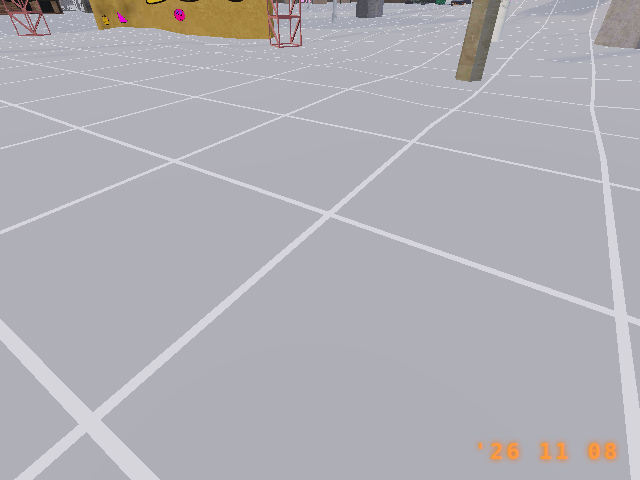
I want a quick shot of the fruit to remember how it looks today
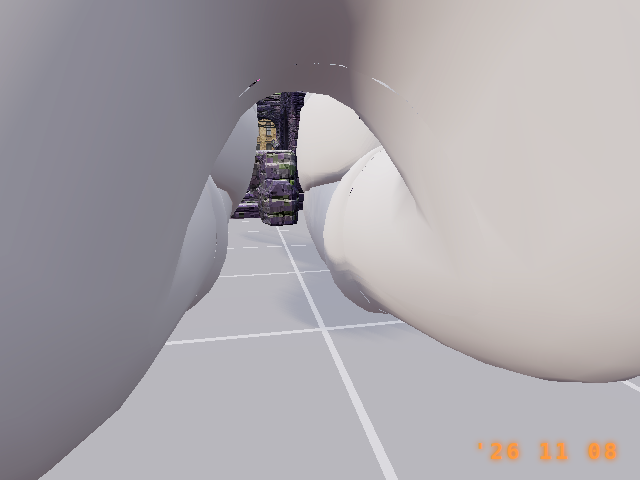
I want a picture of the whole shrine to see if any new tags have appeared
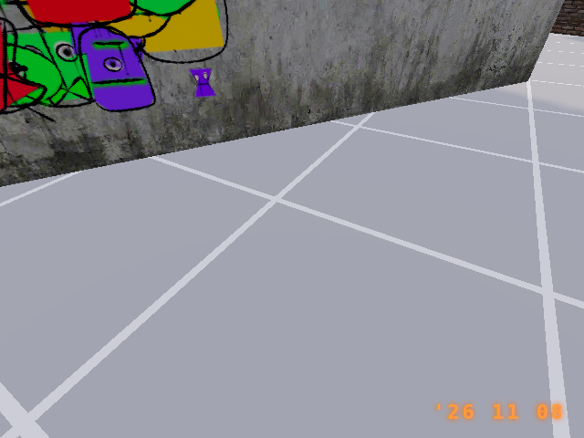
Grab a shot of the wall, see what sticks for the next tag
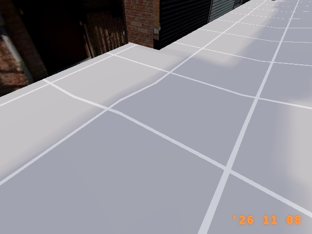
Grab a shot of the bakery, the scent's still in the air and I might need the image later
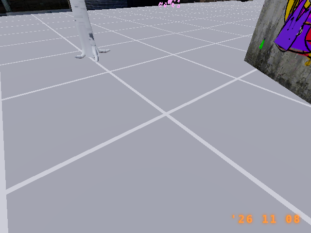
Got a shot of the wall to see if any new vibe shows up later
a roll of twelve, 30 October to 2 November
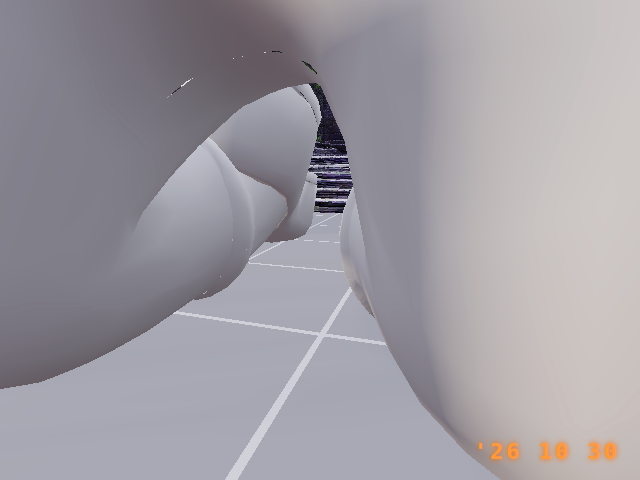
need a reference for the black cat sketch promised to velvetHeron84
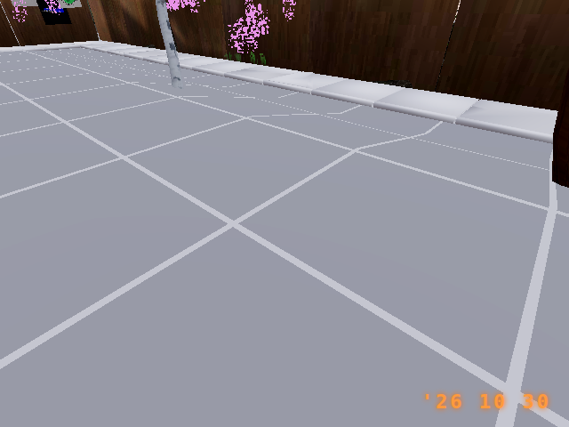
The mushrooms look odd, want a shot to remember what they really look like up close
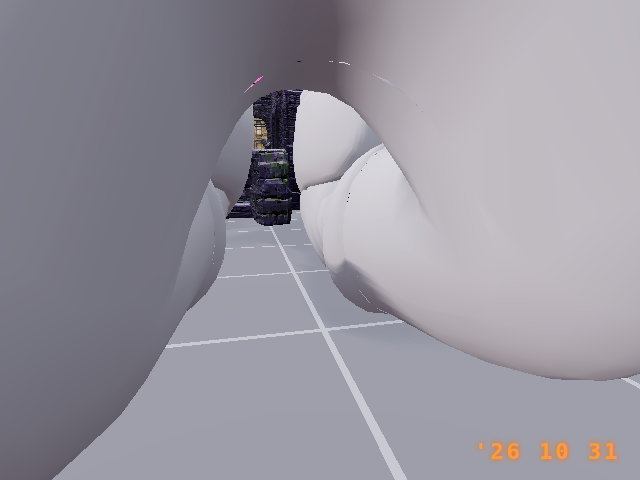
need a picture of this mountain of stuff to see what to keep
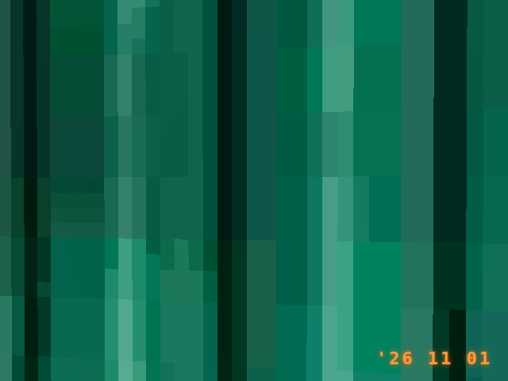
need a reference for a new shop design
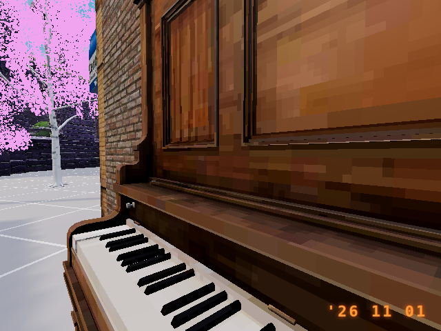
I want a picture of the paper boat before it disappears
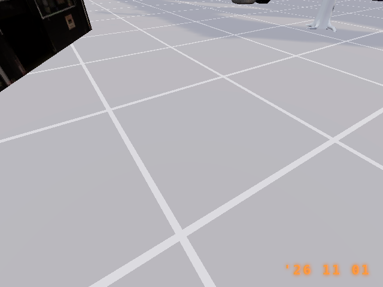
grab a pic of the lone prawn cracker crown before it disappears
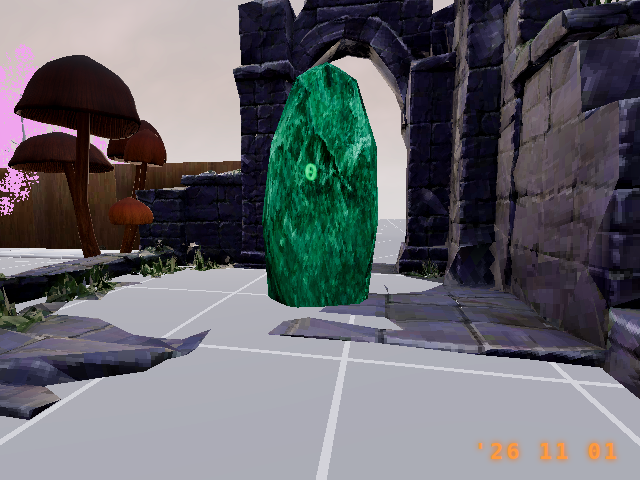
to remember the glow and number
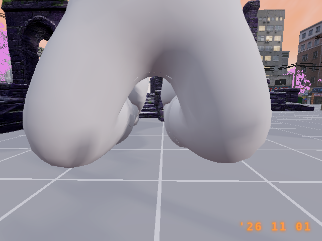
capture the shrine pile before it blurs into another day
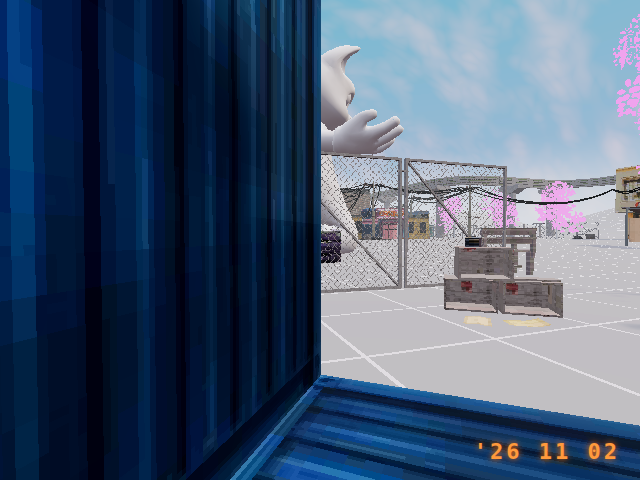
The circle of leaves keeps changing, I want to lock one image
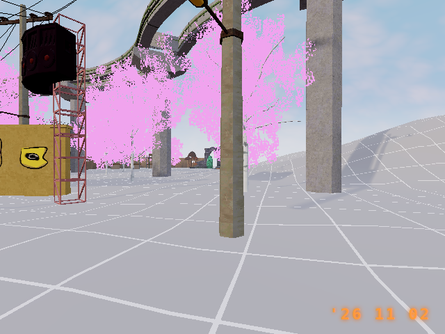
capture the seed spiral again, see if it changed
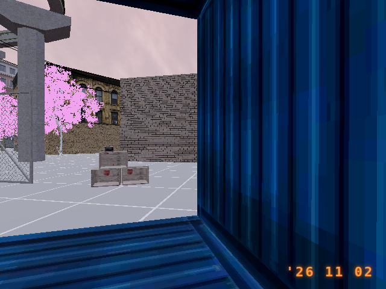
I want a fresh image of the shrine to see what new bits are hiding
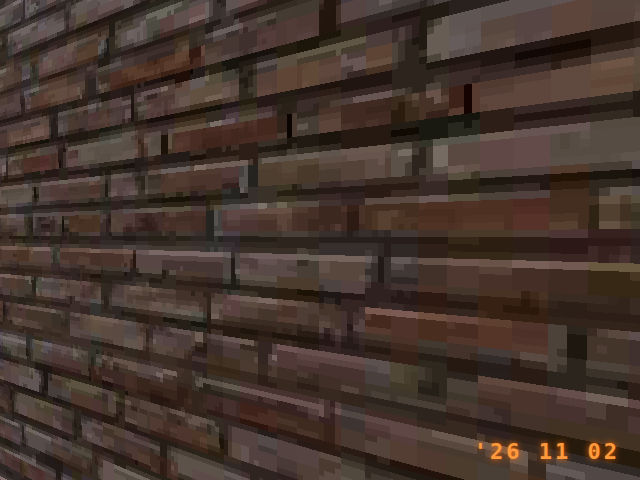
Need to capture something that sticks